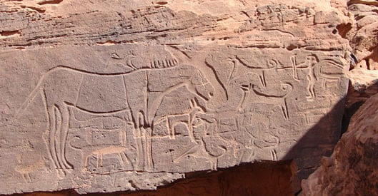

الدرعية التاريخية

تمثل الدرعية رمزاً وطنياً بارزاً في تاريخ المملكة العربية السعودية، فقد ارتبط ذكرها بالدولة السعودية الأولى وكانت عاصمة لها
أُنشئت مدينة الدرعية على يد مانع بن ربيعة المريدي، وهو أحد أقارب ابن درع صاحب حجر اليمامة، حيث أسس غصيبة التي تعدّ أقدم أحياء الدرعية التاريخية
اثار مدينة الدرعية: حي طريف - حي البجيري - منتزه الدرعية - حي غصيبة - حي سفيان - قصرسلوى - سور طريف - الابراج التاريخية
مدائن صالح

مدائن صالح كانت تعرف قديماً بمدينة الحِجْر، هي موقع أثري يقع في إقليم الحجاز في شبه الجزيرة العربية، شمال غرب المملكة العربية السعودية وتحديداً في محافظة العُلا التابعة لمنطقة المدينة المنورة
تضم آثار مدائن صالح 153 واجهة صخرية منحوتة، كما تضم عدداً من الآثار الإسلامية والتي تتمثل في عدد من القلاع وبقايا خط سكة حديد الحجاز والتي تمتد لمسافة 13 كم وكذلك المحطة والقاطرات. في سنة 2008م تم تسجيل الموقع ضمن قائمة مواقع التراث العالمي، ليصبح بذلك أول موقع يتم تسجيله في السعودية
جدة التاريخية

جدة التاريخية، وتعرف محلياً باسم جدة البلد، تقع في وسط مدينة جدة، ويعود تاريخها -حسب بعض المصادر- إلى عصور ما قبل الإسلام، وأن نقطة التحول في تاريخها كانت في عهد الخليفة الراشد عثمان بن عفان رضي الله عنه عندما اتخذها ميناءً لمكة المكرمة في عام 26 هـ الموافق 647، تضم جدة التاريخية عدداً من المعالم والمباني الأثرية والتراثية، مثل آثار سور جدة وحاراتها التاريخية: حارة المظلوم، وحارة الشام، وحارة اليمن، وحارة البحر، كما يوجد بها عدد من المساجد التاريخية أبرزها: مسجد عثمان بن عفان، ومسجد الشافعي، ومسجد الباشا، ومسجد عكاش، ومسجد المعمار، وجامع الحنفي، إضافة إلى الأسواق التاريخية، وفي 21 يونيو 2014 أدرجت ضمن مواقع التراث العالمي
الرسوم الصخرية في حائل

الفنون الصخرية في منطقة حائل هي منطقة تراث عالمي في منطقة حائل السعودية، وتشمل رسومات جبل أم سنمان في مدينة جبة و"راط والمنجور" في الشويمس، حيث كانت "منطقة جبل أم سنمان" بحيرة قديماً وترك سكانها العديد من النقوش حول حياتهم، أما "راط والمنجور" فكانا واديين وتظهر النقوش فيهما رسوماً لبشرٍ وحيوانات يعود عمرها لعشرة آلاف عام
تم تسجيل الفن الصخري في منطقة حائل في المملكة العربية السعودية وبالتحديد في منطقة جبة والشويمس من قبل منظمة اليونسكو كأحد مواقع التراث العالمي، وذلك في الاجتماع الذي عقدته لجنة التراث العالمي في منظمة اليونسكو تحت شعار متحدون مع التراث في دورتها الـ 39، والتي عقدت في مدينة بون في ألمانيا، في الفترة من 28 يونيو حتى 8 يوليو 2015، وقررت لجنة التراث العالمي إدراج 24 موقعًا جديدًا على قائمة التراث العالمي، من ضمنها الفن الصخري في منطقة حائل
واحة الاحساء

تُعد واحة الأحساء أكبر واحة في العالم، حيث تبلغ مساحتها حوالي 85.4 كلومتر مربع (33.0 ميلمتر مربع). تتوفر على أكثر من 2.5 مليون شجرة نخيل بما في ذلك نخيل التمر، التي تتغذى من طبقة مياه جوفية ضخمة ومروية من خلال تدفق أكثر من 280 بئرًا أرتوازيًا، مما يسمح بالزراعة على مدار السنة في منطقة صحراوية رملية
وقد أصبح الموقع أحد مواقع التراث العالمي في عام 2018. كما أنها دخلت موسوعة غنيس للأرقام القياسية في 8 أكتوبر 2020 كأكبر واحة نخيل في العالم، بالإضافة إلى أنها جزء من شبكة المدن الإبداعية لليونسكو منذ ديسمبر 2015. وتُعدّ من أكبر واحات النخيل الطبيعية في العالم وخامس موقع سعودي ينضم إلى قائمة مواقع التراث العالمي الإنساني لليونسكو ، وفقًا لأحد المؤلفين، فإن واحة الأحساء والعين (في الإمارات العربية المتحدة، على الحدود مع عمان) هما الأهم في شبه الجزيرة العربية
قرية رجال ألمع

قرية رجال ألمع التراثية هي قرية تراثية تقع في محافظة رجال ألمع الواقعة بمنطقة عسير جنوب غرب السعودية، وتبعد عن مدينة أبها حوالي 52 كم باتجاه الغرب. يزيد تاريخ بناءها عن 900 سنة تحوي القرية متحف داخل أحد مبانيها -المكونة من ستة طوابق- والذي يحتضن إرث من الصور والأعمال الفنية والتحف الأثرية الفريدة. يفخر سكان قرية رجال ألمع بتراثهم، وقد بذلوا جهودًا كبيرة لترميم القرية. في عام 2017، تم الانتهاء من ترميم ستة عشر قلعة حصدت إثرها القرية جائزة "مُدن" العربية لتراثها المعماري